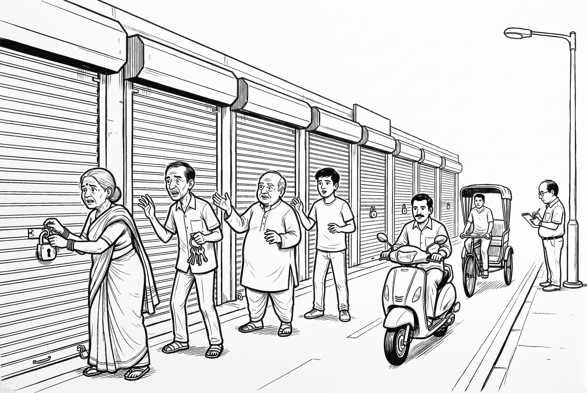

The Shutter and the Road
On Wednesday, 21 October 2026, the government of Finland switched off its public websites. The state information technology centre, called Valtori, said it was “a precautionary measure”. It said it had found no attempt to break in, and that the outage was not caused by a data breach.
The same day, others switched sites off too. French local government offices. A German federal service that runs government websites. Dutch hospitals. The Czech government. Most of their owners described it as a precaution or a preventive step.
That evening, a line began to travel online: the internet will be shut down. This post checks that line against what the official notices said.
What actually went wrong
Think of the internet as the roads of a big city. A website is a shop on one of those roads. Behind each shop is a back room: a computer, called a server, that keeps what the shop needs.
Most shops use a helper to prepare each page when you ask for it. It is like a halwai who makes jalebi fresh when you order. On very many servers, that helper is a computer language. One of them is PHP. The helper only prepares the page. The records stay in the back room.
On 21 October, the people who look after PHP announced two flaws in it. A flaw like this is called a vulnerability. Picture a lock that opens with a trick its maker never thought of. CERT-EU, the European Union’s cyber emergency team, says one flaw arises when PHP runs short of working space, called memory.
Each flaw lets a stranger far away give orders to the helper, without any password or key. A stranger can make the helper do what the stranger wants. OpenAI says its artificial intelligence (AI) model, GPT-5.6 Sol, helped a researcher find one of them. How much the AI did is checked further down.
Every known flaw gets a number, like a ration card number. It is called a CVE, short for Common Vulnerabilities and Exposures. These two are CVE-2026-109618 and CVE-2026-109619.
The fix is called a patch, like a patch on torn cloth. Each website owner has to apply it separately. The makers released it at about 7:30 pm Indian time on 21 October.
They had wanted to keep the news sealed until then. A sealed wait like that is called an embargo. But the PHP Foundation, the group that supports PHP, says the two numbers began to circulate online at about 8:30 pm Indian time on 20 October, so the release moved one day earlier. The Foundation also says one company, Chainguard, published fixed software more than six hours before the agreed time. Its chief executive says he believed reports of attacks under way justified going early, The New Stack reported. The Foundation says it had found no working attack by then.
In 2024, the first signs of the memory problem were noticed, but no way to attack through it was found, the Foundation says.

Who pulled the shutters
Warnings came from many places, not one. In an alert on 21 October, the United States Cybersecurity and Infrastructure Security Agency said that organisations unable to update at once should take PHP-based systems offline until they are updated. The United States National Security Agency recommended the same. CERT-EU advised organisations to consider cutting such systems off from the public internet. Several other governments also warned, The Record reported.
In the notices I read, nobody gave an order.
The owners decided. Reuters reported that the Czech government said it acted on the advice of its cyber watchdog. Belgium’s foreign ministry said it switched off after reports of attacks, but Belgium’s cybersecurity centre said it had recorded none on Belgian sites.
Each of these was a shop owner pulling a shutter. None was the road being closed.
Now the line that travelled. “The internet will be shut down” is about something else. Hundreds of websites went dark, The Record reported, and their owners chose it.
Japan’s Prime Minister, Sanae Takaichi, asked everyone running a PHP website to check it and patch that night, Jiji Press reported. The next day, her government’s spokesman said taking a site offline for a while was an effective step if a patch could not be applied. That part holds. It was advice to consider. It was not a decision to close everything.
What the 70 counts
You may have read that 70 per cent of the internet was at risk. The number is real. It answers a different question.
The statistics firm W3Techs counts websites whose server language is known. About 70 in every 100 of those use PHP, Decrypt reported. That counts use. It does not count damage. WordPress, a tool many people use to build websites, runs on PHP too, Decrypt reported, citing the security firm Wordfence.
Imagine 70 of 100 shops in a market use the same brand of lock. The maker announces a flaw. All 70 shops need to check. It does not mean 70 were robbed. And the count leaves out shops whose lock brand is not known.
PHP’s own notice said every installation that serves web pages was at risk. So “at risk” is a fair phrase. “Broken into” is a different phrase. On 23 October, dozens of experts told The Record that none of the attempts they knew of had succeeded. Sophos and Palo Alto Networks each withdrew an early report that linked a successful attack to these flaws.
Then the picture changed. On 26 October, the American agency CISA added both flaws to its list of flaws known to be used in real attacks. Palo Alto Networks later confirmed that attackers had broken into some of its own firewalls this way. Even then, security firms traced the attacks that worked to very few attackers.
So the honest sentence is this. Millions of servers were open to a flaw. Many attacks were tried. A small number worked. No one had a full count.
How much did the machine do?
Headlines said AI found the flaws. That is partly right. Calif (a hacker security research and red-teaming company) says its researcher used an AI assistant to look for ways to push PHP into trouble. But Calif also says he chose where to look from what he knew of PHP’s past weaknesses, and that no AI model finds every bug from a simple instruction. OpenAI says Calif used its model GPT-5.6 Sol, and that, to its knowledge, AI found the flaws before attackers did.
A second team, at the security firm Wiz, reported the same flaws separately. Wiz says it used AI models from both OpenAI and Google, and that one researcher finished in a week what once took a large team months.
Amazon says its decoy computer saw an attack attempt on 17 October, four days before the public fix.
So “AI found it” shrinks, but not to nothing. People used AI tools, steered by people who knew PHP’s history. The tools made the search much faster.
What India’s own note says
India’s Computer Emergency Response Team (CERT-In), which works under the Ministry of Electronics and Information Technology, published vulnerability note CIVN-2026-0510 on 21 October 2026. It rates the flaws critical and lists the affected PHP versions. Its note says multiple reports confirm large scale exploitation in the wild, and advises readers to patch urgently, using the updates described at php.net. That is a stronger claim than most experts were making on 23 October. Ask of it what you would ask of any notice: whose reports, and how many?
What I believe, and cannot prove
Here I stop reporting. What follows is my belief, not evidence.
I believe pulling the shutter was a reasonable choice for an owner who could not update that evening. I also believe the larger lesson is about the shops nobody remembers: an old page, a forgotten tool, a device with PHP inside. Those are the places where a fix waits longest.
I believe there is a second lesson. AI tools will find more flaws like these, and attackers can use the same tools. Amazon says AI makes it cheaper to turn a fix into a working attack, and Decrypt reported that experts say many more flaws could surface as AI tools spread. When one shared tool sits behind a large share of websites, a flaw in it becomes a problem for schools, hospitals, shops and governments in many countries at once.
My weak point is that no one has counted the forgotten places, so I cannot say how many there are. Also, two flaws are one case, not a trend.
The harder objection is that closing has a price. A hospital page that goes dark leaves people without information. I would answer that no one could know that evening which shops would be tried. That answer does not remove the cost.
What you can do on Tuesday
Next time you see “everything will shut down”, ask three questions.
- Who is saying it? Look for a name: an agency, a company, a person.
- Which exact things? A few shops, or the whole road?
- Can I open the notice myself? The National Security Agency’s page is public. Its own words are advice: update, or take the system offline until it can be fixed.
If you only visit websites, you have nothing to update. The fix belongs on the servers behind them. Decrypt reported that phones and laptops do not need it.
If you own a website, ask your hosting company, which keeps your site on its computers, or your web developer one question: “Which PHP version does my site run, and has it been updated since 21 October 2026?” PHP comes in numbered versions. The fixed ones are 8.5.12, 8.4.27, 8.3.36 and 8.2.35. PHP says versions 8.1 and older no longer get fixes from the PHP project, although some vendors add their own. Do not count on automatic updates: Wordfence warned they will not apply this fix, Decrypt reported. On 23 October, PHP announced a third, rarer flaw. The 21 October versions do not fix it, so ask about that one too.
No one closed the road. Some shopkeepers pulled their shutters. Ask who pulled them, and whether anyone closed the road.
November 3, 2026 | dhirender.tamber@gmail.com
Sources
Reuters, “FACTBOX: Websites taken offline over PHP risks”, 21 October 2026 (read via Devdiscourse).
National Security Agency, “NSA Advisory: Critical Patches Recommended for PHP Vulnerabilities”, press release, 21 October 2026.
United States Cybersecurity and Infrastructure Security Agency, alert “Critical Vulnerabilities in PHP Require Immediate Patching”, 21 October 2026 (updated 23 October; the 21 October text was read).
CERT-EU, Security Advisory 2026-018, “Critical Vulnerabilities in PHP”, versions of 20, 21 and 23 October 2026.
PHP project, security advisory, php.net, 21 October 2026.
PHP project, “History of PHP”, PHP Manual, php.net (undated).
The PHP Foundation, “Today’s PHP Security Release, and How We’re Strengthening PHP Security”, 21 October 2026.
The New Stack, “AI found a critical PHP flaw. The bigger failure began in 2024.”, 22 October 2026.
Calif Research, “PHP2Shell: A tale of two PHP remote vulnerabilities”, 21 October 2026.
OpenAI, “Patch the Planet: global response coordination as agents uncover critical vulnerabilities”, 21 October 2026.
Amazon Threat Intelligence, “Amazon Threat Intelligence identifies PHP2Shell exploitation prior to public disclosure in MadPot”, October 2026.
Palo Alto Networks Unit 42, “Threat Brief: Critical Vulnerabilities in PHP”, updated 25 October 2026.
The Record from Recorded Future News, “Hundreds of websites taken offline as concern grows over two PHP vulnerabilities”, 21 October 2026, and “Reports of PHP bug exploitation attempts grow as experts downplay viability of exploits”, 23 October 2026.
Decrypt, “PHP Panic: Two Critical Bugs Put 70% of the Internet at Risk, and Everyone Is Freaking Out”, 21 October 2026.
CERT-In, Vulnerability Note CIVN-2026-0510, 21 October 2026.
Jiji Press (via nippon.com), “Japan PM Warns of Vulnerabilities in PHP Programming Language”, 21 October 2026, and “No Damage from PHP Flaw Reported: Japan Govt Spokesman”, 22 October 2026.
United States Cybersecurity and Infrastructure Security Agency, Known Exploited Vulnerabilities Catalog, entries for CVE-2026-109618 and CVE-2026-109619, added 26 October 2026.
Palo Alto Networks, security advisory on the PHP2Shell vulnerabilities, updated 28 October 2026.
SecurityWeek, “PHP2Shell Attacks Root Palo Alto Firewalls but Fail Against WordPress”, October 2026.
Wiz Research, “PHP2Shell: AI uncovers critical RCE vulnerabilities”, October 2026.
PHP project, informational advisory on session upload progress (CVE-2026-115560), 23 October 2026.
Was this worth your time?